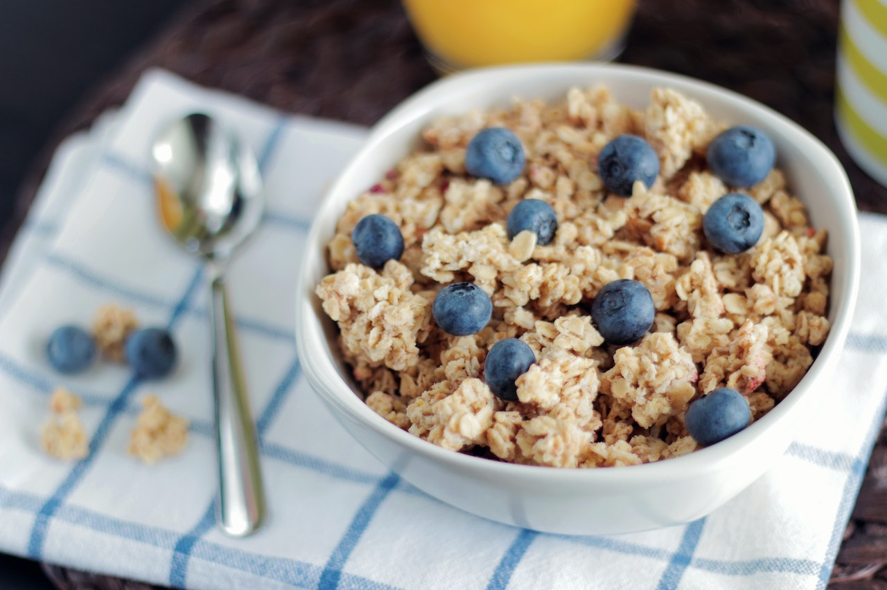

Oats!

Description
I love these no-cook overnight oats! It's easy to make up a few of these at a time for a quick, on-the-go breakfast. You can use different spices or maple syrup and your favorite berry or fruit.
Ingredients:
- Milk: Use oat milk, almond milk, or whatever milk alternative you prefer.
- Oats: Make sure to use rolled oats.
- Chia seeds: Fiber-rich chia seeds add flavor and nutrition.
- Cinnamon: Enhance the overall flavor with ground cinnamon.
- Berries: Though this recipe calls for blueberries, you can use almost any fruit. Bananas, peaches, or any variety of berries work best.
Steps:
- Combine milk, yogurt, oats, honey, chia seeds, and cinnamon in a 1/2-pint jar with a lid; cover and shake until combined.
- Open the jar and fold in the fruit.
- Seal the jar and refrigerate 8 hours to overnight.